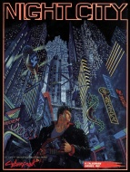

|  | Fiche technique |
| Supplément pour le jeu de rôles Cyberpunk 2020, édité par R. Talsorian Games (1991) | |
| Langue | Français |
| Thème | Description de la ville de Night City et précisions sur la société et l'environnement urbain en 2020 |
| Qualité du background | 4 / 5 |
| Qualité des scénarii | - |
| Qualité des règles | 3 / 5 |
| Qualité des illustrations | 3 / 5 |
| Qualité de l'écriture | 3 / 5 |
Ce supplément insuffle de la vie dans le cadre de jeu principal de Cyberpunk : Night City. Night City est une ville imaginaire construite au tournant du millénaire par un magnat qui lui donnera son nom et située au sud de l'actuelle San Francisco Bay Area. Malgré une présentation un peu fouilli où l'on trouve pêle-mêle des données sur les catégories sociales, les gangs, les médias et la Californie en général, la description de NC quartier par quartier est relativement fouillée et la présence de mini-inspis permet à un MJ en mal d'inspiration de glisser des anecdotes et de créer des situations improvisées à loisir. Ce supplément est indispensable pour un MJ n'ayant pas décidé de faire jouer dans un lieu précis. La maquette est claire, malgré un défaut redondant des suppléments de jeu de rôles : une couverture très belle et des illustrations intérieures plus que médiocres. Quant au contenu, il ne se départit pas complètement de l'aspect caricatural et simpliste du background de CP2020 mais permet néanmoins d'y gagner en richesse.
{kind=link}